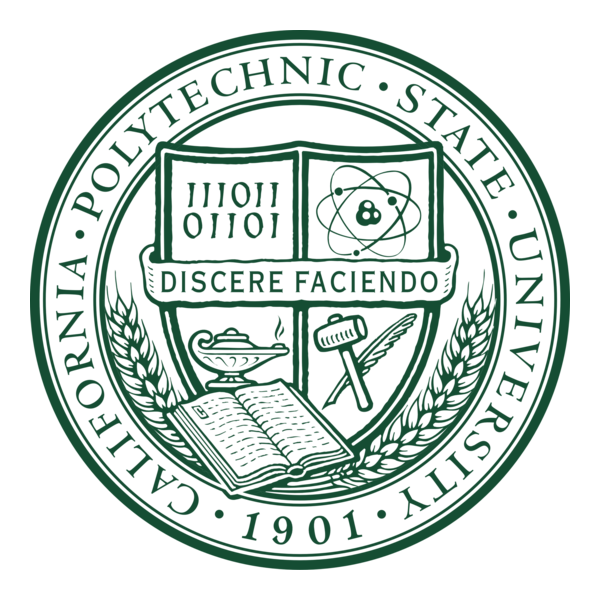

Project—01
Project—01
Finite Element Analysis Studies
Validated simulation models against hand calculations, mesh convergence, and corrected boundary conditions.
Read case studyME // 2027 Cal Poly San Luis Obispo
Mechanical engineering student working where CAD, analysis, and hands-on manufacturing meet—from Baja SAE suspension hardware to rapid prototypes for Vandenberg Space Force Base.
01 / SELECTED WORK
Projects are shown as case studies: the constraint, the engineering work, and what the result taught me.
Project—01
Validated simulation models against hand calculations, mesh convergence, and corrected boundary conditions.
Read case study Project—02
Project—02
Moved from user needs and CAD through structural analysis, fabrication, and load testing.
View project Project—03
Project—03
Designed and tested a wheeled system for transporting and inverting a five-gallon water bottle.
View project Project—04
Project—04
Led a multidisciplinary team through planning and execution of a simulated Mars mission.
View project Project—06
Project—06
Developed the CAD assembly and motion study for a coordinated automated filling process.
View project02 / EXPERIENCE
Vandenberg Space Force Base
Cal Poly Racing · Baja SAE
Fresno City College Tutorial Center
Madera Unified School District
03 / CAPABILITIES
My workflow moves from problem definition to CAD, analysis, drawings, and physical validation.
SolidWorks · Fusion 360 · assemblies · engineering drawings · GD&T
SolidWorks Simulation · FEA validation · EES · mechanics · design tradeoffs
Manual mill · lathe · prototyping · fabrication · design for manufacturing
Technical documentation · tutoring · team leadership · design reviews
04 / CONTACT
